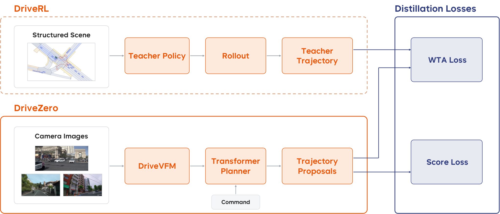

Summary
把端到端驾驶拆成动作模型与感知模型分别在各自最适合的训练范式下预训练，再用蒸馏重新合并。动作侧 DriveRL 是一个 5.7M 参数的特权策略，在由真实 nuPlan 日志初始化的 mixed-agent 交互世界中从零开始用 PPO 训练，输入结构化场景状态与两点 goal，输出 jerk 与 steering-rate 的 Beta 分布；推理时用 critic 做 value-guided test-time action search（TTS）。感知侧 DriveVFM 把 DINOv3、SigLIP2、SAM、Depth Anything V2 四个冻结 foundation model 的特征蒸馏进一个 ViT backbone，不需要任何任务标注。最后 DriveZero 以 DriveVFM 为冻结 backbone（rank-32 Q/V LoRA），用 4 路相机输入预测 64 条轨迹 proposal，通过 winner-takes-all 拟合 DriveRL 的 rollout，并用 PDM 六项指标训练 proposal scoring。由于 teacher 是 goal-conditioned 的，可以对同一场景改查询不同导航意图，得到日志中不存在的多样化监督。结果：DriveRL 在 nuPlan 六个评测上均值 93.01（TTS 后 93.57），超过 Log-Replay；DriveZero 在 NAVSIMv1 navtest 上 94.8 PDMS 与人类司机持平，加 237K SimScale 仿真数据后 95.3；NAVSIMv2 navhard 51.5→57.1 EPDMS，HUGSIM 零样本 46.6 HD-Score。
Problem & Motivation
- 主流端到端驾驶用 behavior cloning 拟合人类日志，监督信号只有一条被记录的未来轨迹。同一场景下多个合理动作、安全关键的纠偏与恢复操作在日志中极少出现，策略一旦离开示范分布就会误差累积。
- 闭环 RL 能优化显式目标、观察自身动作后果、访问并学会从扰动状态恢复，因此行为不被日志覆盖范围限制；但直接做视觉 RL 会把 sample-intensive 的探索与昂贵的视觉仿真耦合在一起，难以 scale。
- privileged RL teacher → visual student 的蒸馏路线（ROACH、GigaPixel、TerraTransfer）已经出现，但这些工作通常把视觉 encoder 当作现成组件，没有单独为驾驶预训练感知表征。
- 作者的核心主张：perception 需要海量多样图像来理解世界，action 需要闭环交互来学会驾驶，二者应解耦预训练，再通过轨迹蒸馏统一到一个 camera-only planner 中。这样 student 既继承 RL 学到的闭环行为，又不需要进入渲染环境做在线探索。
- 另一个被利用的性质是 teacher 的 goal-conditioning：日志只记录一个驾驶意图，而 teacher 可以在同一初始状态被查询不同 goal，从而生成反事实的、goal-consistent 的监督。
Method
0. 总体框架
- 三阶段：
- DriveRL：在结构化状态上用 mixed-agent 闭环 PPO 从零训练特权 teacher，另用 critic 做推理期 TTS。
- DriveVFM：只用原始图像，把多个冻结视觉 foundation model 的特征蒸馏进单个驾驶 backbone。
- DriveZero：camera-only student，冻结 DriveVFM，用 LoRA 适配，通过 WTA 轨迹蒸馏与 proposal scoring 学习 teacher 行为。
- teacher 只在训练期使用，推理时完全移除；student 在 logged frame 上 open-loop 训练，从不进入交互环境。
1. DriveRL：结构化状态上的闭环 PPO teacher
- 输入：每步观测 包含 ego、周围交通参与者、局部 vector map 与交通灯状态。ego 与每个 agent 用 5 帧历史（当前帧 + 4 帧，5 Hz）表示，最多 96 个 agent；map 最多 256 个 token，交通灯状态附着在对应 map element 上。导航意图用 ego frame 下的两点 goal 表示。
- Goal 构造：训练时从日志中的未来 ego 位置采样 1 或 2 个点（单点时复制到两个 slot），50% 保留日志位置、50% 投影到 20 m 内最近 lane center；部署时沿 route polyline 取 near/far 两个 anchor，look-ahead 距离随速度缩放，每步重算。两种来源共享同一个 permutation-invariant 两点接口。
- Policy network：agent、ego kinematics、map 分别用独立 encoder 编码为 256 维 token；两个 goal 点经 sinusoidal positional encoding + 共享 MLP，再 mean-pool 成一个 goal feature。以 ego token 为唯一 query，先做 2 层 ego-to-agent cross-attention，再做 1 层 ego-to-map cross-attention；拼接 ego token、goal、kinematics、map context 后经 MLP 融合进入 policy head。总参数 5.7M。
- 动作分布：jerk 与 tire steering-angle rate 各用一个独立 Beta 分布，shape 参数用 约束到 ，保证单峰并抑制极端动作。训练时采样，评测时取解析 mode ，再经 affine transform 映射到物理范围，由 kinematic bicycle model 执行。
- Mixed-agent 仿真：每个背景 actor 通过统一的 physical state–action 接口挂载独立 behavior provider，支持 log replay、IDM、前车急刹与 learned policy（self-play）。训练配置中背景车用 batched IDM，少量车辆可被 front-vehicle braking 覆盖，行人保持 log replay。晚进入场景的 actor 只有在 ego 位姿距日志位姿 5 m / 0.35 rad 以内且不会碰撞时才被释放，避免 ego 偏离日志后出现不合理插入。
- 奖励：硬事件惩罚 、一次性到达奖励 、六项软质量分数 。PPO 直接以每步奖励 为目标优化策略，其中 为 rollout 长度， 表示硬终止；乘积形式要求六项软指标同时满足，防止某一项的高分掩盖另一项的严重缺陷。碰撞罚 ，off-road 终止并按速度给 base 的惩罚；1.5 m 内首次到达给一次性 ，goal arrival 不终止 rollout。每步奖励定义为
- 八通道 critic：把标量回报拆成 hard、goal 与六个 soft 通道，soft 通道按 deficit 归一化分配，保证 。每个通道独立做 GAE 与 clipped value loss；actor 使用八通道 advantage 之和。由于 reward 与折扣因子一致，该分解在数学上等价于对标量回报做 GAE，只是让 critic 监督更有结构。
- 训练规模：从 nuPlan trainval 取 922,703 个场景，10 Hz 导出、每两帧取一帧得到 5 Hz；12 节点 96 GPU，每 rank 2,048 worlds，全局 196,608 worlds 并行，110 步 rollout。每 rank 225,280 transitions，切成 11 个 20,480 的 minibatch，跑 4 个 PPO epoch，即每次 update 44 步；共 2,400 updates，约 21 小时。优化器 Muon，，，clip 0.2/0.2，entropy 0.01，value 0.5，grad clip 0.5，lr cosine 无 warmup。
2. Value-guided test-time action search（TTS）
- 每个 planner step 保留 Beta mode 作为候选 0，再从同一策略采样 个首动作；每个候选做 步短 rollout，后续动作取同策略在候选诱导状态上的 mode，背景 actor 用 constant-turn-rate-and-acceleration 外推。
- 候选打分复用训练奖励、折扣因子与 critic：
- 只有最高分候选超过 modal action 的分数一个 margin 时才替换，否则执行 modal action。所有候选并行 rollout，因此增大 主要增加并行计算，增大 才增加串行深度。默认 、。
3. DriveVFM：多教师视觉表征蒸馏
- 共享 ViT 对每张图输出每个 foundation model 一个 summary token，以及一组共享 spatial patch token；每个冻结教师配一个轻量 adaptor，分别投影 summary 与 patch 表示。
- 非对称监督：DINOv3 同时监督 summary 与 patch；SigLIP2 只监督 summary；SAM 只监督 patch；Depth Anything V2 蒸馏其视觉特征而非 depth 预测（作者称 feature distillation 更好）。summary 用 cosine distance，patch 用 MSE：
- PHI-S 标准化：不同教师特征的尺度、方差与各向异性差异很大，逐模型 loss 权重无法修正模型内部维度间的不平衡。PHI-S 用离线统计量中心化 patch 特征，做 PCA–Hadamard rotation 把方差均匀分配到各维，再用统一标量缩放，使每个教师成为条件相近的回归目标。
- QK-Clip：训练中部分 attention head 的 QK 点积会快速增长，导致 loss spike。每次 optimizer update 后监测每个 head 的最大 pre-softmax logit，超过阈值 1,000 时对 query/key 投影权重做同比例平方根缩放，不改变 attention 形式。该约束同时让 FP16 部署近似无损（Table A14：mean abs 0.109→0.004，cosine 0.893→0.999）。
- 预训练 schedule：256×256 训练 600K iter，再 512×512 训练 200K iter，global batch 2,048，AdamW。数据混合 LAION-2B、ImageNet-21K、SA-1B 与 OpenDV、nuPlan、Waymo 的驾驶图像。预训练后丢弃所有教师与 adaptor，只保留 backbone。
4. DriveZero：把 RL teacher 蒸馏成 camera-only planner
- 输入与架构：当前帧 4 路相机（CAM_F0/B0/L0/R0）、ego kinematics、由 teacher goal 导出的导航 command。DriveVFM 共享权重编码每路图像，视觉 token 加 3D positional embedding，再用 16 个 learnable register token 压缩成 scene token；ego kinematics 与 command 编码成一个 ego token，加到 个 learnable trajectory query 上；4 层 trajectory decoder 通过 cross-attention 输出轨迹。独立的 scoring decoder 把每条候选轨迹编码成 score query，attend 视觉 token，预测 PDM 六项分量。
- Teacher rollout 监督：每个 logged frame 上，冻结 teacher 接收结构化状态与 goal，在所有背景 actor 按日志运动的条件下 rollout 出 20 步轨迹 ，表示为 ego-relative 序列。student 的 64 条 proposal 中只有最近的一条参与回归， 为逐点 平均，该 WTA 分配让不同 query 捕获不同驾驶模式、选择交给 scoring branch：
- Proposal scoring：六项分量用 PDM 目标做 BCE，候选轨迹在进入 scoring 前 detach，使生成与排序解耦：
- Goal augmentation：日志只有一条已实现轨迹，但 teacher 是 goal-conditioned 的。训练时先增广 route intent 与对应导航 command，再让 teacher 生成轨迹；同一增广 route 也用于评估 student proposal 的分数，保证 command、teacher 轨迹与 proposal score 三者一致。这样每个 logged scene 被扩展成多个有效监督目标。
- 推理：选预测总分最高的 proposal，不需要 teacher，也不需要渲染或闭环仿真。
5. 实现细节
| 项目 | 设置 |
|---|---|
| DriveRL 参数量 / token 宽 / heads | 5.7M / 256 / 4 |
| DriveRL attention | 2 层 ego-to-agent + 1 层 ego-to-map |
| Agent / map 容量 | 96 agents（含 ego）/ 256 map tokens |
| 动作空间 | jerk m/s³；steering rate rad/s |
| 车辆约束 | 加速度上限 4.0 m/s²；前轮转角上限 rad；轴距 3.09 m |
| DriveRL 分布式训练 | 12 节点 / 96 GPU；2,048 worlds/rank；全局 196,608 worlds |
| DriveRL rollout / update | 110 步 @5 Hz；每 rank 225,280 transitions；11 minibatch × 4 epoch |
| DriveRL 优化 | Muon；2,400 updates；lr cosine；约 21 h |
| TTS 默认参数 | ，， |
| DriveVFM 预训练 | 256² × 600K iter + 512² × 200K iter；batch 2,048；AdamW |
| DriveVFM 教师 | DINOv3（summary+patch）、SigLIP2（summary）、SAM（patch）、Depth Anything V2（patch feature） |
| DriveVFM 稳定化 | PHI-S；QK-Clip 阈值 1,000 |
| DriveZero backbone | DriveVFM ViT-L（冻结）+ rank-32 Q/V LoRA |
| DriveZero 输入 / 输出 | 4 相机 960×512；20 步 @5 Hz |
| DriveZero 规划头 | 64 proposals；256 维；4 层 decoder；每相机 16 register tokens |
| DriveZero 参数量 | 可训练 18.58M / 总计 338.46M |
| DriveZero 训练 | 100K navtrain + 237K SimScale；16×H20；25 epochs；batch 256；AdamW lr cosine；wd 0.01；grad clip 1.0；FP32；38 h |
Pipeline

- 构造交互世界：从 nuPlan 日志取场景，每个背景 actor 挂载 log replay / IDM / 前车急刹 / learned policy 之一。
- 训练特权 teacher：DriveRL 从随机初始化开始，用结构化状态与两点 goal 做闭环 PPO，学习 jerk 与 steering-rate 的 Beta 策略；同时训练八通道 critic。
- 推理期动作搜索：TTS 采样 个首动作，各做 步 rollout，用 critic bootstrap 打分，超过 margin 才替换 modal action。
- 预训练视觉 backbone：DriveVFM 从原始图像蒸馏 DINOv3、SigLIP2、SAM、Depth Anything V2 的冻结特征，用 PHI-S 平衡异质目标。
- 生成监督：在每个 logged frame 上，冻结 teacher 接收结构化状态与 goal，rollout 出 20 步轨迹；训练时先增广导航意图，得到多样化 goal-consistent 轨迹。
- 训练 student：DriveZero 用冻结 DriveVFM + LoRA 编码 4 路相机，decoder 输出 64 条 proposal；最近 proposal 做 WTA 回归，scoring head 用 PDM 目标做 BCE。
- 部署：丢弃 teacher 与所有 foundation model，只保留 DriveVFM backbone 与 DriveZero 规划头；推理时选预测分数最高的 proposal。
Key Results
1) DriveRL 在 nuPlan 闭环评测（Table 2，CLS）
| Method | Human | Val14 NR | Val14 R | Test14-hard NR | Test14-hard R | Test14-random NR | Test14-random R |
|---|---|---|---|---|---|---|---|
| Log-Replay | ✗ | 93.53 | 80.32 | 85.96 | 68.80 | 94.03 | 75.86 |
| PDM-Closed | ✓ | 92.84 | 92.12 | 65.08 | 75.19 | 90.05 | 91.63 |
| CaRL | ✗ | 93.87 | 93.12 | – | 85.00 | – | – |
| GigaFlow | ✗ | – | 93.80 | – | – | – | – |
| DriveRL | ✗ | 95.16 | 94.25 | 89.97 | 89.18 | 94.50 | 95.00 |
| DriveRL-TTS | ✗ | 95.54 | 94.53 | 91.13 | 89.15 | 95.93 | 95.12 |
- DriveRL 六项均值 93.01，超过 Log-Replay 的 83.08，且在全部六个设置上超过 Log-Replay；也超过 CaRL 与 GigaFlow 这两个同样不使用人类数据的已有方法。
- TTS 把均值提升 0.56 到 93.57，五项提升、Test14-hard R 基本不变（89.15 vs 89.18）。
2) TTS 的 test-time scaling（Table 3，固定 checkpoint）
| Setting | Val14 NR | Val14 R | Hard NR | Hard R | Random NR | Random R | Mean | Δ |
|---|---|---|---|---|---|---|---|---|
| DriveRL | 95.16 | 94.25 | 89.97 | 89.18 | 94.50 | 95.00 | 93.01 | 0.00 |
| TTS | 95.17 | 94.49 | 89.97 | 89.05 | 94.92 | 95.11 | 93.12 | +0.11 |
| TTS | 95.22 | 94.38 | 89.98 | 88.97 | 95.29 | 94.98 | 93.13 | +0.13 |
| TTS | 95.49 | 94.43 | 90.95 | 88.85 | 95.83 | 94.84 | 93.40 | +0.39 |
| TTS | 95.54 | 94.53 | 91.13 | 89.15 | 95.93 | 95.12 | 93.57 | +0.56 |
- 收益集中在 non-reactive 的 Test14 拆分：Hard NR +1.16、Random NR +1.43；reactive 模式提升很小，Hard R 在 时反而低于 baseline。
- 作者把趋势解释为 test-time search 是局部 policy-improvement operator：候选越多，越可能找到一个短期 rollout 避开不利后果的首动作。
3) NAVSIMv1 navtest（Table 4，PDMS）
| Method | Input | Human | NC | DAC | TTC | C | EP | PDMS |
|---|---|---|---|---|---|---|---|---|
| Human Driver | GT | ✓ | 100 | 100 | 100 | 99.9 | 87.5 | 94.8 |
| PDM-Closed | GT | ✓ | 94.6 | 99.8 | 89.9 | 86.9 | 99.9 | 89.1 |
| DriveSuprim | C & L | ✓ | 98.6 | 98.6 | 95.5 | 100 | 91.3 | 93.5 |
| DrivoR-Scale | C | ✓ | 99.1 | 99.2 | 96.9 | 100 | 91.6 | 94.6 |
| DriveRL | GT | ✗ | 99.8 | 99.9 | 99.1 | 99.0 | 91.5 | 95.8 |
| DriveZero | C | ✗ | 99.0 | 99.2 | 96.0 | 100 | 93.1 | 94.8 |
| DriveZero-Scale | C | ✗ | 99.2 | 99.4 | 97.3 | 99.9 | 92.5 | 95.3 |
- DriveZero 在不使用任何人类轨迹监督的条件下达到 94.8，与 Human Driver 持平；DriveZero-Scale 用 237K SimScale 场景扩到 95.3，成为首个在该榜超过人类司机的端到端模型。
- 提升主要来自 EP（DriveZero 93.1 vs Human 87.5），而 NC 99.0 仍低于人类的 100；PDMS 更高不等于更安全。
4) NAVSIMv2 navhard（Table 5，EPDMS）
| Method | Human | Stage 1 EPDM | Stage 2 EPDM | EPDMS |
|---|---|---|---|---|
| PDM-Closed* | ✓ | – | – | 56.6 |
| LTF | ✓ | – | – | 25.1 |
| NavFormer | ✓ | – | – | 34.1 |
| RAP | ✓ | – | – | 39.6 |
| GuideFlow | ✓ | – | – | 51.5 |
| SimScale | ✓ | – | – | 53.2 |
| DrivoR-Scale | ✓ | – | – | 54.6 |
| ZTRS | ✗ | – | – | 48.1 |
| GigaPixel | ✗ | 77.8 | 63.5 | 50.1 |
| DriveRL* | ✗ | 84.1 | 65.4 | 55.6 |
| DriveZero | ✗ | 84.1 | 60.8 | 51.5 |
| DriveZero-Scale | ✗ | 82.3 | 69.1 | 57.1 |
- DriveZero 51.5，比同为 RL-teacher 路线的 GigaPixel 高 1.4；DriveZero-Scale 57.1 比 DriveZero 高 5.6，超过使用 GT symbolic 输入的 PDM-Closed（56.6）和同样用 SimScale 的 DrivoR-Scale（54.6）。
- 扩数据的代价是 Stage 1 从 84.1 降到 82.3（-1.8），但 Stage 2 从 60.8 升到 69.1（+8.3）：nominal 性能略降，扰动鲁棒性大幅提升。
- 注意 DriveRL 55.6 用 GT 结构化输入，仍低于 PDM-Closed 56.6；DriveZero 与 GuideFlow 在 51.5 上持平。
5) HUGSIM 真闭环零样本评测（Table 6，HD-Score）
| Method | Human | RC Avg | HD Easy | HD Medium | HD Hard | HD Extreme | HD Avg |
|---|---|---|---|---|---|---|---|
| LTF | ✓ | 38.9 | 58.9 | 18.0 | 9.8 | 25.9 | 23.7 |
| VAD | ✓ | 31.4 | 36.3 | 9.5 | 8.0 | 11.5 | 13.4 |
| UniAD | ✓ | 45.9 | 64.9 | 45.8 | 20.6 | 6.6 | 32.7 |
| DrivoR-Scale | ✓ | 46.4 | 64.8 | 50.3 | 16.8 | 25.8 | 38.1 |
| GigaPixel | ✗ | 50.1 | 67.4 | 51.9 | 19.1 | 21.6 | 38.5 |
| DriveZero | ✗ | 53.9 | 78.5 | 47.2 | 16.0 | 28.7 | 39.4 |
| DriveZero-Scale | ✗ | 54.5 | 81.9 | 60.5 | 24.7 | 27.6 | 46.6 |
- 没有任何 HUGSIM 微调，DriveZero-Scale 平均 46.6，比此前最好的 GigaPixel 高 8.1。作者把增益归因于 DriveRL 在 OOD SimScale 数据上生成的更多样、更合理的轨迹。
- 绝对分数仍低：Hard 24.7、Extreme 27.6，说明真闭环下的长尾交互依然困难。
6) DriveVFM 与 DriveZero 消融（Table 7，ViT-S，仅 navtrain）
| Study | Configuration | NC | DAC | EP | TTC | Comfort | PDMS |
|---|---|---|---|---|---|---|---|
| Visual backbone | DA3 Small | 99.10 | 98.84 | 89.68 | 96.21 | 99.93 | 93.31 |
| DA2 ViT-S | 98.57 | 99.21 | 91.44 | 95.13 | 99.96 | 93.72 | |
| DINOv2 ViT-S | 98.86 | 99.07 | 91.63 | 95.46 | 99.98 | 93.88 | |
| DINOv3 ViT-S | 98.93 | 99.01 | 91.31 | 95.77 | 99.97 | 93.88 | |
| DriveVFM ViT-S | 99.17 | 99.14 | 91.79 | 96.29 | 99.98 | 94.41 | |
| Teachers | DINOv3 + SigLIP2 | 98.67 | 98.98 | 91.55 | 95.27 | 99.98 | 93.69 |
| + SAM | 98.79 | 99.11 | 91.44 | 96.06 | 99.97 | 94.10 | |
| + DA2 = Full | 99.17 | 99.14 | 91.79 | 96.29 | 99.98 | 94.41 | |
| Supervision | Human trajectories | 98.76 | 98.95 | 91.99 | 95.30 | 99.98 | 93.92 |
| DriveRL trajectories | 98.60 | 98.81 | 91.64 | 95.27 | 99.94 | 93.61 | |
| DriveRL + goal aug. | 99.17 | 99.14 | 91.79 | 96.29 | 99.98 | 94.41 |
- DriveVFM ViT-S 比同容量 DINOv3 ViT-S 高 0.53 PDMS；加入 SAM +0.41、加入 Depth Anything V2 +0.31，两个教师累计 +0.72。
- 关键对照：只用 DriveRL 轨迹监督（93.61）反而低于人类轨迹（93.92）；加上 goal augmentation 才升到 94.41，比人类高 0.49。也就是说，“超越人类示范”的增益几乎全部来自 goal augmentation 带来的监督多样性，而不是 RL 轨迹本身更好。
7) 视觉 backbone scaling（Table A13，仅 navtrain）
| Backbone | NC | DAC | TTC | Comfort | EP | DDC | PDMS |
|---|---|---|---|---|---|---|---|
| DINOv3 ViT-L | 98.80 | 99.25 | 95.74 | 99.94 | 92.72 | 95.87 | 94.55 |
| DriveVFM ViT-S | 99.17 | 99.14 | 96.29 | 99.98 | 91.79 | 95.97 | 94.41 |
| DriveVFM ViT-B | 98.89 | 99.24 | 95.93 | 99.97 | 92.44 | 95.79 | 94.54 |
| DriveVFM ViT-L | 99.00 | 99.24 | 95.97 | 99.99 | 93.10 | 95.89 | 94.83 |
- ViT-S→B→L 为 94.41→94.54→94.83，呈正 scaling；ViT-L 仍略高于预训练规模大得多的 DINOv3 ViT-L（94.55）。
8) 交通灯输入与奖励（Table A8/A9）
| 设置 | Val14 NR | Val14 R | Hard NR | Hard R | Random NR | Random R | 红灯违规率 |
|---|---|---|---|---|---|---|---|
| 无 TL 输入 | 93.35 | 93.19 | 86.49 | 85.41 | 93.48 | 92.24 | – |
| 有 TL 输入 | 94.76 | 93.62 | 88.35 | 85.70 | 95.21 | 93.89 | 3.88% |
| TL 输入 + TL reward | 93.08 | 91.35 | 81.71 | 82.96 | 92.36 | 91.79 | 2.03% |
- 加入交通灯输入在六个设置全部提升（+0.29~+1.86）；但把红灯违规加入奖励后，违规率从 3.88% 降到 2.03%，六个 nuPlan 总分却全部下降（-1.21~-3.14）。作者因此在正式 teacher 的标量奖励中不包含交通灯违规项，只把它作为诊断指标。
9) Self-play（Table A7）
| Model | Val14 NR | Val14 R | Hard NR | Hard R | Random NR | Random R | Mean |
|---|---|---|---|---|---|---|---|
| DriveRL | 95.16 | 94.25 | 89.97 | 89.18 | 94.50 | 95.00 | 93.01 |
| Self-Play | 95.09 | 93.92 | 90.04 | 88.96 | 95.04 | 95.63 | 93.11 |
| Self-Play, 3-perturb | 95.15 | 93.74 | 88.90 | 87.47 | 93.70 | 94.77 | 92.29 |
| Self-Play, augmentation | 94.91 | 94.38 | 88.56 | 87.92 | 93.43 | 94.22 | 92.24 |
| Self-Play, 3-perturb + aug. | 95.08 | 94.48 | 88.30 | 87.27 | 94.60 | 94.68 | 92.40 |
- self-play 在 nuPlan 上没有稳定优势（最高 93.11 vs 93.01），作者归因于 nuPlan 闭环评测用 IDM 驱动背景车，不奖励更自然的交互。self-play 只用于实车部署配置。
Critical reading
- “Beyond human demonstrations” 的边界被标题放大：DriveRL 的世界仍由人类日志初始化，训练 goal 也来自日志中的未来 ego 位置，日志只”seed scenes and goals”不等于完全不用人类数据。真正新增的是 goal-conditioned teacher 能回答反事实查询，而不是行为完全脱离日志分布。
- Table 7 削弱了核心叙事：纯 DriveRL 轨迹监督 93.61 < 人类轨迹 93.92。作者诚实地报告了这一点，但这也说明 RL 轨迹本身并不比人类轨迹更有信息量；+0.49 的最终优势完全依赖 goal augmentation。把”teacher 更好”与”监督更多”混在一个对照里，无法分解各自贡献。
- goal augmentation 的对照天然不对称：人类轨迹基线无法做同样的意图增广（日志里没有反事实人类轨迹），因此这不是同等数据量下的公平比较。缺少”人类轨迹 + 其他增广（如翻转/扰动）“或”teacher 不做 goal aug. 但数据量匹配”的对照。
- Headline 95.3 依赖额外的 237K OOD 仿真数据：不加 SimScale 的 DriveZero 是 94.8，恰好与 Human 持平，而不是超过。摘要用 95.3 讲”surpassing the human driver”，但正文 Table 4 的 base 模型并没有超过；且 SimScale 数据的生成管线本身可能使用了人类数据训练的模型，需要辨析”without human trajectory supervision”的严格程度。
- navhard 的”超过所有只用 navtrain 的方法”不成立为严格领先：DriveZero 51.5 与 GuideFlow 51.5 完全持平，而 GuideFlow 使用人类示范。领先 GigaPixel 1.4 是事实，但”all methods”的措辞过强。
- Stage 1/Stage 2 的 trade-off 未被讨论：加 SimScale 后 Stage 1 EPDM 降 1.8，Stage 2 升 8.3，总 EPDMS 提升。这说明 OOD 仿真数据提升了扰动鲁棒性但损害了 nominal 精度；论文只把它当作正面结果，没有分析哪些场景变差。
- 交通灯合规是明确的安全缺口：正式 teacher 的奖励不含红灯违规，Table A9 显示加入该奖励会把违规率减半但总分下降 1.2~3.1。作者选择优化 benchmark 分数而非合规性；在实车部署语境下这是需要正面讨论的取舍，而不应只放在附录。
- TTS 的收益集中在非反应式场景：Hard R 在 时低于 baseline， 也只是回到 89.15（baseline 89.18）。这说明短 horizon rollout + 恒定转向率外推的背景车模型不足以处理交互式场景；论文却用平均分 93.57 讲”policy improvement”。
- TTS 的推理成本没有数字： 意味着每个 planner step 做 64 条 5 步闭环 rollout，计算量约为单次前向的数百倍；论文只说”primarily enlarges parallel computation”，没有给延迟、显存或吞吐，无法判断实车可行性。
- 奖励尺度与碰撞惩罚偏弱：碰撞罚 ，而六项 soft 项乘积除以 110 后在 110 步上的累计回报可达约 0.7，加上 goal 0.5，硬安全事件与软质量的量级接近；论文没有做 reward scale 或惩罚强度的敏感性分析。
- Beta 分布单峰限制 teacher 的多模态性：每步动作分布被约束为单峰，多模态只体现在 student 的 64 条 proposal 上。teacher 本身无法表达”左转或直行都合理”这类离散意图以外的多峰连续控制，可能限制蒸馏上限。
- 消融只在 ViT-S + 无 SimScale 下做：主表用 ViT-L + SimScale，Table 7 的 +0.53/+0.72/+0.49 能否外推到主配置未知；ViT scaling 表（A13）只报 PDMS，没有重复监督消融。
- 关键训练细节缺失：、、goal augmentation 的具体意图采样分布与每条场景的增广数量、teacher rollout 的目标速度/舒适性筛选标准都没有给出，复现难度高。
- 实车验证只有定性描述：3.3 节说在小车队上部署 DriveRL、在拥挤城市道路闭环演示，但没有接管率、里程、碰撞/违规统计，也没有说明安全员介入情况。这是系统报告里最有价值却最不量化的部分。
- 真闭环只有 HUGSIM 一个 benchmark，绝对分数低：Hard 24.7 / Extreme 27.6 的 HD-Score 说明长尾场景仍远未解决；NAVSIMv1/v2 都是 pseudo closed-loop（背景车 log replay 或 IDM），不能等同于真实反应式交互。
- 训练成本未与 baseline 对齐：DriveRL 96 GPU × 21 h、DriveVFM 800K iter × batch 2,048、DriveZero 16 H20 × 38 h；论文没有报告总 GPU-hours，也没有与 DrivoR、GigaPixel 等 baseline 的训练成本做对比，“scalable” 的论点缺少成本维度。
Strengths & Weaknesses
Strengths
- 问题拆解干净：把”感知要 scale 图像、动作要闭环交互”这一直觉落实为两套独立预训练管线，再用轨迹蒸馏合并；比”直接视觉 RL”或”纯 BC”都更符合各自的样本效率特性。
- 把 teacher 当作可控数据生成器：goal-conditioned teacher 可以在同一场景回答反事实意图，这是日志数据本身不具备的能力；goal augmentation 是全文最有迁移价值的 insight。
- 工程规模扎实：196,608 个并行 world、GPU batched 的全 rollout loop、110 步 × 2,400 updates 在 21 小时内完成，说明 mixed-agent 闭环 RL 已经可以常规化训练，而不是一次性 demo。
- DriveVFM 的蒸馏配方完整：非对称 summary/patch 监督、PHI-S 解决异质特征尺度、QK-Clip 同时稳定训练与 FP16 部署，每一部分都有消融或数值证据（Table 7、A14）。
- 主结果覆盖三类评测：nuPlan 闭环、NAVSIMv1/v2 pseudo closed-loop、HUGSIM 真闭环零样本；不是只挑一个有利 benchmark。
- 诚实地报告了不利对照：Table 7 明确写出 DriveRL-only 低于 human-only，Table A9 明确写出 TL reward 降分，Table A7 明确写出 self-play 无稳定增益。这种 negative result 在系统报告里少见。
- student 架构轻：冻结 ViT-L + rank-32 LoRA，仅 18.58M 可训练参数，38 h / 16 H20 完成训练，部署侧不需要 teacher 或 foundation model，工程上合理。
Weaknesses
- 核心 claim 的证据链不闭合：标题说 “beyond human demonstrations”，但 (a) 训练世界与 goal 来自日志，(b) 纯 RL 监督不如人类监督，(c) 超过人类只在加 237K OOD 仿真数据后成立。三点叠加使”超越”更像是数据与增广的胜利，而非行为范式的胜利。
- goal augmentation 缺少可复现定义：如何采样替代意图、如何保证新 goal 在路网中可达、每条场景增广几次、增广后如何过滤不合理轨迹，全部没有说明；这是方法最关键的组件，却最不透明。
- 没有多模态 teacher：Beta 单峰策略无法表达同一状态下多个连续控制模式；student 的 64 proposal 只是事后覆盖，不能恢复 teacher 从未产生的模式。
- 安全合规被 benchmark 分数绑架：红灯违规不入奖励、碰撞惩罚量级偏弱、EP 高于人类而 NC 低于人类；这些取舍在论文中偏附录化，缺少”部署时如何补救”的讨论。
- 推理成本不透明：TTS 的 与 DriveVFM ViT-L 的实际延迟、显存、吞吐均未报告，无法评估实时性；这是端到端驾驶论文的基本信息。
- 真闭环证据薄弱：HUGSIM 只有 4 个场景来源、绝对 HD-Score 低，且”zero-shot”只表示不做 HUGSIM 微调；训练数据与 HUGSIM 场景是否存在重叠没有说明。
- 消融与主实验不同配置：ViT-S vs ViT-L、有无 SimScale 的差异使消融结论的外推性受限；缺少主配置上的逐项消融。
- 实车部分是定性 demo：没有接管率、里程、违规统计与安全员介入记录，“real-world application” 的说服力远低于 benchmark 部分。
- 复现信息不足：两个 loss 权重、goal augmentation 协议、teacher rollout 的过滤规则、DriveVFM 各教师 loss 权重均缺失；代码/权重是否开源也未在正文明确。
Notes
-
论文定位：一篇 system report，而不是单点方法论文。核心贡献是把端到端驾驶的监督源从”人类日志”换成”闭环 RL teacher 的 rollout”，并证明 perception 与 action 可以分别在图像自监督与结构化闭环 RL 中预训练后蒸馏合并。它延续 privileged teacher → visual student 的路线（ROACH、GigaPixel、TerraTransfer），但把视觉侧也做成了专门的驾驶 foundation model。
-
可迁移点：
- goal-conditioned teacher 作为反事实数据生成器：只要 teacher 接受 goal/command 条件，就可以在同一初始状态查询多个意图，把一条日志扩展成多条监督。这个配方不限于驾驶，也适用于任何”日志只有一条已实现轨迹、但策略可条件化”的机器人操作与导航任务。
- 多教师特征蒸馏 + PHI-S：用冻结 foundation model 的中间特征替代人工感知标注，PHI-S 处理异质特征的尺度/协方差失衡。对任何需要把多个预训练模型能力合并进单个 backbone 的场景都适用。
- QK-Clip 作为训练稳定器与 FP16 部署保障：只缩放 Q/K 投影权重、不改 attention 形式，实现简单，且能用 max logit / cosine similarity 定量验证。比 QK-Norm 更轻量。
- critic-guided test-time search + margin：用与训练一致的 reward、discount 与 critic 给短 rollout 打分，只有超过 modal action 一个 margin 才替换。这是一个保守、无需重训的推理期 policy improvement 模板，可直接套到任何 actor-critic 策略上。
- 冻结 backbone + 低秩适配：ViT-L 只训 rank-32 Q/V LoRA（18.58M/338.46M），大幅降低 student 训练成本；适合把大视觉模型接到小规划头上。
- 八通道 critic 分解：把 hard/goal/六项 soft 拆成独立 value channel，再用 deficit 权重保证回报守恒。既保留标量策略目标，又给 critic 提供结构化监督，可用于任何多目标 reward 的 PPO。
-
待跟进：
- goal augmentation 的具体协议与信息量：需要知道替代意图如何采样、每条场景增广多少条、如何过滤不可达或不合理 goal；这决定了 +0.49 PDMS 中有多少来自”反事实查询”、多少只是数据量增加。
- teacher 与 student 的容量/模态 gap：5.7M 单峰 Beta teacher 的分布被 64 条 proposal 的 student 拟合，哪些 teacher 行为在蒸馏中丢失？需要比较 teacher 与 student 在同一批 logged frame 上的轨迹分布。
- 交通灯合规的补救路径：在不牺牲总分的前提下加入红灯约束（reward shaping、constrained PPO、推理期过滤），并测量违规率与 EP 的 Pareto 前沿。
- TTS 的实时性边界： 与 在实车算力下的延迟/吞吐，以及是否可以用 learned value 或 early exit 降低 的成本。
- SimScale 数据与 HUGSIM 的重叠审计：确认零样本 claim 不受场景泄漏影响；同时分析 Stage 1 下降 1.8 的具体场景类型。
- 多模态 teacher：把单峰 Beta 换成 mixture/flow/diffusion 策略，观察蒸馏后的 proposal 多样性与闭环分数是否提升。
- 实车闭环的量化指标：接管率、每千公里违规、安全员介入次数，以及 self-play 与非 self-play 在实车上的对照。
- 总训练成本的 scaling law：把 DriveRL 的 world 数、DriveVFM 的 iter 数、DriveZero 的数据量放在同一坐标下，判断当前配置离 compute-optimal 有多远。